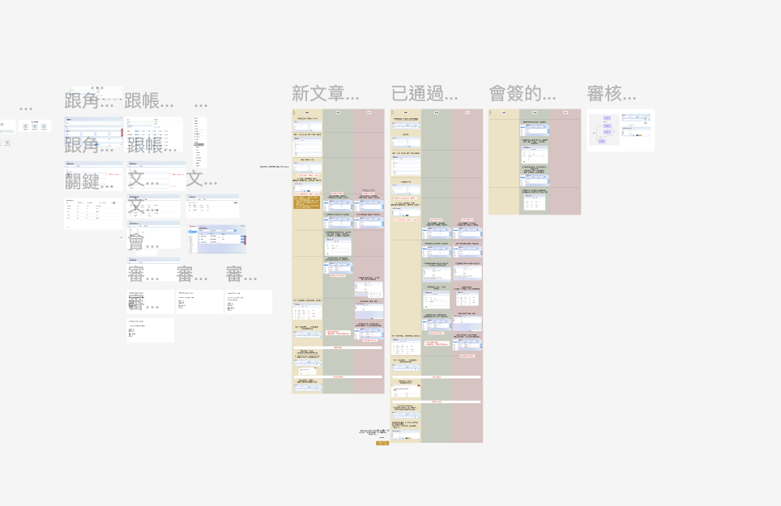

Overview
這是一個大型多語系企業形象網站重設計專案，網站需承載多個部門的內容，並讓使用者能持續新增和維護大量靜態頁面。
我負責 UI/UX 設計與前端切版。專案沿用公司共用後台與編輯器基礎，再依客戶內容需求製作大量專用模板；我也參與內容審核流程的規劃與實作。
專案問題
- 網站需支援多語系與大量靜態內容，頁面架構需要兼顧後續擴充。
- 編輯者需要自行建立和維護頁面，因此需要合適的內容模板與編輯方式。
- 團隊過去缺少內容審核流程的規劃經驗，需要釐清不同角色的步驟和責任。
- 需求來自多個部門，需要協助整理需求差異，維持設計和交付的一致性。
專案目標
- 支援多語系與大量頁面內容。
- 讓編輯者能透過模板建立和維護靜態頁面。
- 以清楚的流程圖協助團隊釐清內容審核方式。
我的工作與做法
沿用共用編輯器，製作專案專用模板
本案沿用公司共用後台中的編輯器功能。因客戶需要編輯大量靜態頁面，我依照不同內容版型設計並製作專案專用模板，也透過實際建立測試文章檢查編輯者使用時的內容與版面需求。
整理內容審核流程
團隊過去沒有審核流程的規劃經驗。我繪製泳道圖和流程圖，協助團隊及客戶確認不同角色的工作步驟，再從最小可行範圍開始實作。

支援擴充與協作
設計和前端切版時考量模組重用與後續擴充，並和設計、後端同仁協作串接頁面。需求有落差時，協助整理問題並調整設計對應方式。
成果
- 官網已正式上線。
- 交付多語系網站內容與專案專用內容模板。
- 以泳道圖和流程圖協助團隊釐清內容審核流程。
反思
這是長期且需求持續變動的專案。若重新進行，我會更早建立共用規格與變更紀錄，並讓剩餘功能、交付範圍和進度保持清楚，方便團隊協作與中途接手。